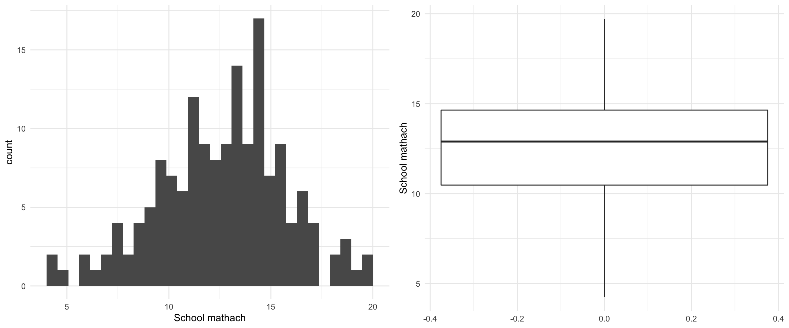

สิวะโชติ ศรีสุทธิยากร กนิษฐ์ ศรีเคลือบ ภาควิชาวิจัยและจิตวิทยาการศึกษา คณะครุศาสตร์ จุฬาลงกรณ์มหาวิทยาลัย 6 May 2021
เตรียมความพร้อมก่อนเรียน
เนื้อหาในวันนี้จะเรียนผ่านการทำกิจกรรม โดยใช้ชุดข้อมูลตัวอย่างคือชุดข้อมูล High School & Beyond สำรวจโดยศูนย์สถิติการศึกษาแห่งชาติ (National Center for Educational Statistics: NCES) ของสหรัฐอเมริกาในปี ค.ศ. 1982 ประกอบด้วยข้อมูลของนักเรียนจำนวน 7,185 คน จากโรงเรียนจำนวน 160 โรงเรียน ประกอบด้วยชุดข้อมูลระดับนักเรียน hsb1.sav และชุดข้อมูลระดับโรงเรียน hsb2.sav
ชุดข้อมูลในไฟล์ hsb2.sav ประกอบด้วยตัวแปรในระดับโรงเรียนได้แก่ (1) ขนาดโรงเรียน (size) ที่วัดจากจำนวนนักเรียนในโรงเรียน (2) ประเภทของโรงเรียน (sector) ที่มี 2 ประเภทได้แก่ 1 = โรงเรียนเครือคาทอริก และ 0 = โรงเรียนรัฐบาล (3) สัดส่วนนักเรียนที่เรียนอยู่ในสายวิชาการ (pracad) (4) บรรยากาศทางระเบียบวินัย (disciplinary climate) (5) สัดส่วนของชนกลุ่มน้อย (himinty) โดย 1 = โรงเรียนที่มีชนกลุ่มน้อยมากกว่า 40% และ 0 = โรงเรียนที่มีชนกลุ่มน้อยน้อยกว่าหรือเท่ากับ 40% ของนักเรียนทั้งหมด และ (6) ค่าเฉลี่ยเศรษฐานะของนักเรียนในโรงเรียน (meanses)
ติดตั้ง package ที่จำเป็น
การวิเคราะห์ HLM ด้วยโปรแกรม R จำเป็นต้อง download packages เพิ่มเติมดังนี้
> install.packages("lme4")
> install.packages("lmerTest")
>
> library(lme4)
> library(lmerTest)Hierarchical Linear Model (HLM)
สืบเนื่องจากเนื้อหาในสัปดาห์ที่ผ่านมา นิสิตได้ทราบมโนทัศน์ และประเภทของข้อมูลพหุระดับที่มีหลากหลายประเภท ในสัปดาห์นี้จะลงรายละเอียดเกี่ยวกับโมเดลทางสถิติต่าง ๆ สำหรับการวิเคราะห์ข้อมูลพหุระดับแบบระดับลดหลั่น (hierarchical data) ด้วย โมเดลที่เรียกว่า โมเดลเชิงเส้นแบบลดหลั่น (hierarchical linear model: HLM) สารสนเทศที่ได้จากโมเดลดังกล่าวจะช่่วยให้นักวิจัยสามารถวิเคราะห์และอธิบายความผันแปรที่เกิดขึ้นในตัวแปรตามที่เกิดขึ้นจากตัวแปรที่อยู่ในระดับสูงกว่าได้
โมเดล HLM ประกอบด้วยโมเดลย่อยหลายโมเดล ซึ่งครอบคลุมการวิเคราะห์ส่วนประกอบความแปรปรวนของตัวแปรตาม และการวิเคราะห์ความสัมพันธ์พหุระดับระหว่างตัวแปรตามกับตัวแปรอิสระ รายละเอียดของแต่ละโมเดลจะอธิบายผ่านการทำกิจกรรม 6 กิจกรรม ในหัวข้อต่อไป
One-Way ANOVA with random effect
โมเดลการวิเคราะห์ความแปรปรวนทางเดียวแบบอิทธิพลสุ่มใช้สำหรับวิเคราะห์เพื่อเปรียบเทียบค่าเฉลี่ยระหว่างกลุ่มหรือระดับของปัจจัยที่ได้มาจากการสุ่ม จากชุดข้อมูล hsb1.sav ขอให้นิสิตดำเนินการดังต่อไปนี้
> # 1. importing data
> library(foreign)
> dat1<-read.spss("/Users/siwachoat/Library/Mobile Documents/com~apple~CloudDocs/เอกสารประกอบการสอน/2756714/dataset/week3/hsb1.sav", to.data.frame=T)
> head(dat1) schoolid minority female ses mathach
1 1224 0 1 -1.528 5.876
2 1224 0 1 -0.588 19.708
3 1224 0 0 -0.528 20.349
4 1224 0 0 -0.668 8.781
5 1224 0 0 -0.158 17.898
6 1224 0 0 0.022 4.583พิจารณาการแจกแจงของ
mathachพิจารณาการแจกแจงของ
mathachจำแนกตามโรงเรียน
การแจกแจงของ mathach ในภาพรวมกับเมื่อจำแนกตามโรงเรียนมีความเหมือนหรือแตกต่างกันอย่างไร?
> library(dplyr)
> library(ggplot2)
> library(gridExtra)
> dat1$schoolid<-factor(dat1$schoolid)
> p1<-ggplot(dat1)+geom_density(aes(x=mathach),alpha=0.2)+xlim(-10,40)+theme_minimal()
> p2<-ggplot(dat1)+geom_density(aes(x=mathach, fill=schoolid),alpha=0.2, show.legend = FALSE)+xlim(-10,40)+theme_minimal()
> grid.arrange(p1,p2, ncol=2)ลองพิจารณาด้วยค่าสถิติ
> dat1%>%summarise(mean=mean(mathach), sd=sd(mathach)) mean sd
1 12.74785 6.878246> dat1%>%group_by(schoolid)%>%summarise(mean=mean(mathach), sd=sd(mathach))# A tibble: 160 x 3
schoolid mean sd
* <fct> <dbl> <dbl>
1 1224 9.72 7.59
2 1288 13.5 7.02
3 1296 7.64 5.35
4 1308 16.3 6.11
5 1317 13.2 5.46
6 1358 11.2 5.88
7 1374 9.73 8.36
8 1433 19.7 3.88
9 1436 18.1 4.55
10 1461 16.8 6.95
# … with 150 more rows> aggr<-dat1%>%group_by(schoolid)%>%summarise(mean=mean(mathach), sd=sd(mathach))
> summary(aggr) schoolid mean sd
1224 : 1 Min. : 4.24 Min. :3.541
1288 : 1 1st Qu.:10.47 1st Qu.:5.592
1296 : 1 Median :12.90 Median :6.320
1308 : 1 Mean :12.62 Mean :6.241
1317 : 1 3rd Qu.:14.65 3rd Qu.:6.863
1358 : 1 Max. :19.72 Max. :8.481
(Other):154 > p1<-aggr%>%ggplot()+geom_histogram(aes(x=mean))+xlab("School mathach")+theme_minimal()
> p2<-aggr%>%ggplot()+geom_boxplot(aes(y=mean))+ylab("School mathach")+theme_minimal()
> grid.arrange(p1,p2, ncol=2)
คำถามวิจัย
คะแนน mathach ของนักเรียนในแต่ละโรงเรียนมีความแตกต่างกันหรือไม่?
โมเดลการวิเคราะห์

ในกรณีนี้โมเดลการวิเคราะห์มี 2 ระดับ ได้แก่โมเดลระดับนักเรียน และโมเดลระดับโรงเรียนดังนี้
โมเดลระดับนักเรียน (student-level model)
\(mathach_{ij}=\beta_{0j}+r_{ij}\)
โมเดลระดับโรงเรียน (school-level model)
\(\beta_{0j}=\gamma_{00}+u_{0j}\)
จากสมการทั้งสองสามารถนำมารวมกันเพื่อเขียนเป็นโมเดลรวม (combined model) ได้ดังนี้
\(mathach_{ij}=\gamma_{00}+u_{0j}+r_{ij}\)
เมื่อ \(i = 1, 2, 3, ..., n_j\) และ \(j = 1, 2, 3, ..., J\)
จากสมการในโมเดลรวมข้างต้นจะเห็นว่ามีการระบุอิทธิพลที่มีต่อ mathach ของนักเรียน 2 ตัวได้แก่ อิทธิพลคงที่ (fixed effect) คือ \(\gamma_{00}\) ที่เป็นค่าเฉลี่ยผลสัมฤทธิ์รวม (grand mean) และอิทธิพลสุ่ม (random effect) คือ \(u_{0j}\) กับ \(r_{ij}\) ที่เป็นความแตกต่างระหว่างโรงเรียน และระหว่างนักเรียนภายในโรงเรียนตามลำดับ โดยที่ \(u_{0j} \sim N(0, \tau_{00})\) และ \(r_{ij} \sim N(0,\sigma^2)\)
Note: พารามิเตอร์ในโมเดลข้างต้นมีกี่ตัว อะไรบ้าง แต่ละตัวมีความหมายอย่างไร?
การประมาณค่าพารามิเตอร์ในโมเดลข้างต้นด้วยโปรแกรม R สามารถทำได้โดยใช้ใช้ฟังก์ชัน lmer() ซึ่งจะระบุโมเดลโดยอิงจากโมเดลรวม (combined model) จากค่าพารามิเตอร์ของหน่วยข้อมูลในระดับที่ 2 เท่านั้น ในกรณีข้างต้นจึงระบุเพียงพารามิเตอร์ fixed-effect (\(\gamma_{00}\)) และพารามิเตอร์ random-effect (\(u_{0j}\)) ดังนี้ lmer(math~1+(1|schoolid))
> #1. estimate the model parameters
> null.model<-lmer(mathach~1+(1|schoolid),data=dat1)
>
> #2. extract the output
> summary(null.model)Linear mixed model fit by REML. t-tests use Satterthwaite's method ['lmerModLmerTest']
Formula: mathach ~ 1 + (1 | schoolid)
Data: dat1
REML criterion at convergence: 47116.8
Scaled residuals:
Min 1Q Median 3Q Max
-3.0631 -0.7539 0.0267 0.7606 2.7426
Random effects:
Groups Name Variance Std.Dev.
schoolid (Intercept) 8.614 2.935
Residual 39.148 6.257
Number of obs: 7185, groups: schoolid, 160
Fixed effects:
Estimate Std. Error df t value Pr(>|t|)
(Intercept) 12.6370 0.2444 156.6473 51.71 <2e-16 ***
---
Signif. codes: 0 '***' 0.001 '**' 0.01 '*' 0.05 '.' 0.1 ' ' 1การวิเคราะห์ null model จะให้สารสนเทศที่สำคัญคือปริมาณความแปรปรวนในตัวแปรตามที่เกิดขึ้นอันเนื่องมาจากตัวแปร (ที่ไม่ได้สังเกตค่าในโมเดลนี้) ในแต่ละระดับ (ระดับนักเรียน/ระดับโรงเรียน) ผลการวิเคราะห์ข้างต้นจะเห็นว่า ความแปรปรวนระดับนักเรียนมีค่าเท่ากับ \(\sigma^2 = 39.148\) และความแปรปรวนระดับโรงเรียนมีค่าเท่ากับ \(\tau = 8.614\) ผลการวิเคราะห์นี้ทำให้สามารถประมาณค่าสถิติที่สำคัญตัวหนึ่งคือ สัมประสิทธิ์สหสัมพันธ์ภายในกลุ่ม (intraclass correlation: ICC) ดังนี้
ปัจจุบันการคำนวณ ICC ในข้างต้นสามารถทำได้โดยใช้ package-sjstats ดังนี้
> install.packages("sjstats")> library(sjstats)
> performance::icc(null.model)# Intraclass Correlation Coefficient
Adjusted ICC: 0.180
Conditional ICC: 0.180นอกจากนี้ผู้วิเคราะห์ยังสามารถเรียกผลทดสอบนัยสำคัญของอิทธิพลสุ่มในโมเดลได้ด้วยฟังก์ชัน package-ranova() ดังนี้
> ranova(null.model)ANOVA-like table for random-effects: Single term deletions
Model:
mathach ~ (1 | schoolid)
npar logLik AIC LRT Df Pr(>Chisq)
<none> 3 -23558 47123
(1 | schoolid) 2 -24052 48107 986.12 1 < 2.2e-16 ***
---
Signif. codes: 0 '***' 0.001 '**' 0.01 '*' 0.05 '.' 0.1 ' ' 1ประมาณค่าเฉลี่ยของกลุ่ม (\(\beta_{0j}\))
จากโมเดลในระดับที่ 1
\(mathach_{ij}=\beta_{0j}+r_{ij}\)
จะเห็นว่าพารามิเตอร์ \(\beta_{0j}\) คือพารามิเตอร์จุดตัดแกนซึ่งในกรณีนี้มีความหมายเป็นค่าเฉลี่ยผลสัมฤทธิ์ทางการเรียนวิชาคณิตศาสตร์ของแต่ละโรงเรียน (group mean) เมื่อ \(j=1,2,...,J\)
การประมาณค่าเฉลี่ยของกลุ่มดังกล่าวใน R สามารถเขียนคำสั่งได้ดังนี้
> intercept<-coef(null.model)
> intercept<-intercept[1]
> summary(intercept$schoolid) (Intercept)
Min. : 5.234
1st Qu.:10.731
Median :12.871
Mean :12.637
3rd Qu.:14.463
Max. :19.115 > names(intercept$schoolid)<-"group.mean"
> intercept$schoolid%>%
+ ggplot()+geom_histogram(aes(x=group.mean))+
+ xlab(expression(beta[0[j]]==gamma[00]+u[0[j]]))+
+ theme_minimal()จากผลการวิเคราะห์ข้างต้นจะเห็นว่าผลสัมฤทธิ์ทางการเรียนเฉลี่ยในระดับโรงเรียนมีค่าอยู่ในช่วง 5.234 ถึง 19.115
การวินิจฉัยความเหมาะสมของโมเดลการวิเคราะห์
> #calculate level-1 residuals
> res1<-residuals(null.model)
>
> #calculae level-2 residuals
> res2<-dat1$mathach-12.6370-res1(1) normality
> par(mfrow=c(1,2))
> hist(res1)
> hist(res2)> library(ggpubr)
> p1<-ggqqplot(res1)
> p2<-ggqqplot(res2)
> grid.arrange(p1,p2, ncol=2)(2) homogeneity of variances
> temp<-dat1
> temp$e2<-res1^2
> temp$res1<-res1
> temp$schoolid<-factor(temp$schoolid)
> temp%>%ggplot()+geom_boxplot(aes(y=res1,fill=schoolid),show.legend=F)+theme_minimal()> temp%>%group_by(schoolid)%>%summarise(var=var(res1))%>%
+ ggplot()+geom_histogram(aes(x=var))+theme_minimal()> temp%>%group_by(schoolid)%>%summarise(var=var(res1))%>%summary() schoolid var
1224 : 1 Min. :12.54
1288 : 1 1st Qu.:31.27
1296 : 1 Median :39.94
1308 : 1 Mean :39.75
1317 : 1 3rd Qu.:47.10
1358 : 1 Max. :71.93
(Other):154 > #log-determinant criterion
> log(71.93)/log(12.54)[1] 1.690717Means as Outcomes Regression Model
จากผลการวิเคราะห์ใน nullmodel จะเห็นว่าสามารถแยกส่วนประกอบความแปรปรวนในผลสัมฤทธิ์ทางการเรียนวิชาคณิตศาสตร์ได้เป็นสองส่วนได้แก่ ความแปรปรวนระดับนักเรียน และความแปรปรวนในระดับโรงเรียน ดังนี้
\(Var(mathach_{ij})=\tau_{00}+\sigma^2=8.614 + 39.148\)
โดยพบว่าความแปรปรวนในระดับโรงเรียน (\(\tau_{00}\)) มีนัยสำคัญทั้งเชิงสถิติและเชิงปฏิบัติ แสดงว่าผลสัมฤทธิ์ทางการเรียนวิชาคณิตศาสตร์ของนักเรียนในระดับโรงเรียน (group means) มีความแตกต่างกันไปตามโรงเรียนที่แตกต่างกันด้วย (\(\beta_j \neq \beta{j'}\) เมื่อ \(j \neq j'\))
เมื่อพบว่าค่าเฉลี่ยของกลุ่มมีความแตกต่างกันไปตามหน่วยข้อมูลซึ่งก็คือโรงเรียน ในงานวิจัยบางงานจึงมีความสนใจที่จะอธิบายความผันแปรของค่าเฉลี่ยดังกล่าว โดยอาจหาตัวแปรอิสระในระดับโรงเรียนมาอธิบาย โมเดลการวิเคราะห์ในกรณีนี้จึงจะมีการเพิ่มตัวแปรอิสระในโมเดลระดับโรงเรียนเพื่ออธิบายความผันแปรในพารามิเตอร์ intercept เรียกโมเดลการวิเคราะห์นี้ว่า mean as outcome regression model หรือ โมเดลสัมประสิทธิ์จุดตัดแกนสุ่ม (random intercept model)
คำถามวิจัย
เศรษฐานะของนักเรียนในระดับโรงเรียนส่งผลต่อคะแนนเฉลี่ยผลสัมฤทธิ์ทางการเรียนคณิตศาสตร์ของนักเรียนในระดับโรงเรียนหรือไม่?
โมเดลการวิเคราะห์

พารามิเตอร์ในโมเดลข้างต้นมีกี่ตัว อะไรบ้าง?
เนื่องจากโมเดลการวิเคราะห์นี้จำเป็นต้องใช้ข้อมูลของตัวแปรอิสระในระดับโรงเรียน คือ meanses มาเป็นตัวแปรอธิบายความผันแปรที่เกิดขึ้นในค่าเฉลี่ยผลสัมฤทธิ์ในระดับโรงเรียน การวิเคราะห์จึงจำเป็นต้องมีการเตรียมชุดข้อมูลให้พร้อมก่อนการวิเคราะห์ด้วยการรวมชุดข้อมูล hsb1.sav และ hsb2.sav เข้าด้วยกัน ในโปรแกรม R อาจใช้ฟังก์ชัน merge() ดังนี้
> # hsb1.sav
> dat1<-read.spss("/Users/siwachoat/Library/Mobile Documents/com~apple~CloudDocs/เอกสารประกอบการสอน/2756714/dataset/week3/hsb1.sav", to.data.frame=T)
> head(dat1) schoolid minority female ses mathach
1 1224 0 1 -1.528 5.876
2 1224 0 1 -0.588 19.708
3 1224 0 0 -0.528 20.349
4 1224 0 0 -0.668 8.781
5 1224 0 0 -0.158 17.898
6 1224 0 0 0.022 4.583> # hsb2.sav
> dat2<-read.spss("/Users/siwachoat/Library/Mobile Documents/com~apple~CloudDocs/เอกสารประกอบการสอน/2756714/dataset/week3/hsb2.sav", to.data.frame=T)
> head(dat2) schoolid size sector pracad disclim himnty meanses
1 1224 842 0 0.35 1.597 0 -0.428
2 1288 1855 0 0.27 0.174 0 0.128
3 1296 1719 0 0.32 -0.137 1 -0.420
4 1308 716 1 0.96 -0.622 0 0.534
5 1317 455 1 0.95 -1.694 1 0.351
6 1358 1430 0 0.25 1.535 0 -0.014> # merge dataset
> dat<-merge(dat2,dat1,by="schoolid")
> str(dat)'data.frame': 7185 obs. of 11 variables:
$ schoolid: num 1224 1224 1224 1224 1224 ...
$ size : num 842 842 842 842 842 842 842 842 842 842 ...
$ sector : num 0 0 0 0 0 0 0 0 0 0 ...
$ pracad : num 0.35 0.35 0.35 0.35 0.35 0.35 0.35 0.35 0.35 0.35 ...
$ disclim : num 1.6 1.6 1.6 1.6 1.6 ...
$ himnty : num 0 0 0 0 0 0 0 0 0 0 ...
$ meanses : num -0.428 -0.428 -0.428 -0.428 -0.428 -0.428 -0.428 -0.428 -0.428 -0.428 ...
$ minority: num 0 0 0 0 0 0 0 0 0 0 ...
$ female : num 1 1 0 0 0 0 1 0 1 0 ...
$ ses : num -1.528 -0.588 -0.528 -0.668 -0.158 ...
$ mathach : num 5.88 19.71 20.35 8.78 17.9 ...เมื่อยุบรวมชุดข้อมูลแล้ว สามารถประมาณค่าพารามิเตอร์ในโมเดลโดยกำหนดโมเดลในฟังก์ชัน lmer() ด้วยหลักภาษาเหมือนเดิมดังนี้
> mean.model<-lmer(mathach~meanses+(1|schoolid),data=dat)
> summary(mean.model)Linear mixed model fit by REML. t-tests use Satterthwaite's method [
lmerModLmerTest]
Formula: mathach ~ meanses + (1 | schoolid)
Data: dat
REML criterion at convergence: 46961.3
Scaled residuals:
Min 1Q Median 3Q Max
-3.13480 -0.75256 0.02409 0.76773 2.78501
Random effects:
Groups Name Variance Std.Dev.
schoolid (Intercept) 2.639 1.624
Residual 39.157 6.258
Number of obs: 7185, groups: schoolid, 160
Fixed effects:
Estimate Std. Error df t value Pr(>|t|)
(Intercept) 12.6494 0.1493 153.7425 84.74 <2e-16 ***
meanses 5.8635 0.3615 153.4067 16.22 <2e-16 ***
---
Signif. codes: 0 '***' 0.001 '**' 0.01 '*' 0.05 '.' 0.1 ' ' 1
Correlation of Fixed Effects:
(Intr)
meanses -0.004ผลการวิเคราะห์ข้างต้นหมายความว่าอย่างไร??
https://www.menti.com/9erio6kmvk <— คลิ้กเลย
One-Way ANCOVA with random effect
ผลการวิเคราะห์ null model เราทราบแล้วว่าความแปรปรวนระหว่างกลุ่ม (ระหว่างโรงเรียน) มีนัยสำคัญทางสถิติ ซึ่งให้ข้อสรุปว่า ผลสัมฤทธิ์ทางการเรียนของนักเรียนในแต่ละโรงเรียนมีค่าเฉลี่ยที่แตกต่างกัน อย่างไรก็ตามอาจมีข้อสงสัยว่าความแตกต่างที่เกิดขึ้นนั้นไม่ได้เป็นเพราะการบริหารจัดการของโรงเรียนแต่เพียงอย่างเดียว แต่อาจะเป็นเพราะพื้นฐานทางบ้านของผู้เรียนในแต่ละโรงเรียนไม่เท่าเทียมกันด้วย เพื่อพิสูจน์ข้อสงสัยนี้ผู้วิจัยจึงนำตัวแปรเศรษฐานะ (ses) ของผู้เรียนมาเป็นตัวแปรควบคุมในโมเดล และทำการวิเคราะห์โดยใช้เทคนิคการวิเคราะห์ความแปรปรวนร่วม ดังนี้
คำถามวิจัย
เมื่อมีการควบคุมปัจจัยด้านเศรษฐานะให้คงที่ ผลสัมฤทธิ์ของนักเรียนในระดับโรงเรียนมีความแตกต่างกันหรือไม่ อย่างไร?
โมเดลการวิเคราะห์

เพื่อให้ค่าจุดตัดแกนมีความหมายและสามารถแปลความได้อย่างสมบูรณ์ การวิเคราะห์ความแปรปรวนร่วมจึงมักมีการ centering ตัวแปรควบคุมก่อนการวิเคราะห์ ดังนี้
> #centering ses by groupmean
> ses.cen<-dat$ses-dat$meanses
> dat$ses.cen<-ses.cenการประมาณค่าพารามิเตอร์ในโมเดลการวิเคราะห์สามารถทำได้ดังนี้
> ancova.model<-lmer(mathach~ses.cen+(1|schoolid),data=dat,REML=F)
> summary(ancova.model)Linear mixed model fit by maximum likelihood . t-tests use Satterthwaite's
method [lmerModLmerTest]
Formula: mathach ~ ses.cen + (1 | schoolid)
Data: dat
AIC BIC logLik deviance df.resid
46728.4 46755.9 -23360.2 46720.4 7181
Scaled residuals:
Min 1Q Median 3Q Max
-3.09692 -0.73196 0.01945 0.75739 2.91423
Random effects:
Groups Name Variance Std.Dev.
schoolid (Intercept) 8.612 2.935
Residual 37.005 6.083
Number of obs: 7185, groups: schoolid, 160
Fixed effects:
Estimate Std. Error df t value Pr(>|t|)
(Intercept) 12.6494 0.2437 157.7181 51.90 <2e-16 ***
ses.cen 2.1912 0.1086 7023.0025 20.17 <2e-16 ***
---
Signif. codes: 0 '***' 0.001 '**' 0.01 '*' 0.05 '.' 0.1 ' ' 1
Correlation of Fixed Effects:
(Intr)
ses.cen 0.003 โมเดล random effect ANCOVA มีลักษณะเกือบเหมือนกับโมเดล ANCOVA แบบปกติ ต่างกันเพียงอิทธิพลของตัวแปรอิสระแบบจัดประเภทที่มีต่อตัวแปรตามเป็นอิทธิพลแบบสุ่ม ดังนั้นข้อตกลงเบื้องต้นของโมเดล random effect ANCOVA จึงเหมือนกับโมเดล ANCOVA แบบปกติทุกประการ ข้อตกลงเบื้องต้นที่สำคัญคือ homogeneity of regression slope ที่กำหนดให้สัมประสิทธิ์ความชันของตัวแปร covariate มีค่าเท่ากันในแต่ละกลุ่มหรือระดับของปัจจัย
นิสิตคิดว่า assumption ดังกล่าวเป็นจริงในข้อมูลชุดนี้หรือไม่? จะตรวจสอบได้อย่างไร? และหากไม่เป็นจริงจะแก้ปัญหาอย่างไร?
Random-coefficient Regression model
โมเดลนี้มีลักษณะเฉพาะคือมีการกำหนดให้สัมประสิทธิ์ความถดถอยทั้งหมดของโมเดลเป็นอิทธิพลแบบสุ่ม ซึ่งทำให้จุดตัดแกนและอิทธิพลของตัวแปรอิสระที่มีต่อตัวแปรตามมีความแตกต่างกันอย่างสุ่มระหว่างกลุ่ม
คำถามวิจัย
อิทธิพลของ ses ที่มีต่อ mathach มีความแตกต่างกันระหว่างโรงเรียนหรือไม่
เมื่อควบคุมอิทธิพลสุ่มของ ses ให้คงที่ แล้ว mathach ในระดับโรงเรียนมีความแตกต่างกันหรือไม่
คุณภาพและความเหลื่อมล้ำทางการศึกษาของแต่ละโรงเรียนเป็นอย่างไร
โมเดลการวิเคราะห์

การกำหนดโมเดลการวิเคราะห์ในฟังก์ชัน lmer() สามารถทำได้ในทำนองเดียวกัน ดังนี้
> random.coef<-lmer(mathach~ses.cen+(1+ses.cen|schoolid), data=dat)
> summary(random.coef)Linear mixed model fit by REML. t-tests use Satterthwaite's method [
lmerModLmerTest]
Formula: mathach ~ ses.cen + (1 + ses.cen | schoolid)
Data: dat
REML criterion at convergence: 46714.2
Scaled residuals:
Min 1Q Median 3Q Max
-3.09680 -0.73194 0.01858 0.75388 2.89928
Random effects:
Groups Name Variance Std.Dev. Corr
schoolid (Intercept) 8.682 2.9465
ses.cen 0.694 0.8331 0.02
Residual 36.700 6.0581
Number of obs: 7185, groups: schoolid, 160
Fixed effects:
Estimate Std. Error df t value Pr(>|t|)
(Intercept) 12.6493 0.2445 156.7391 51.73 <2e-16 ***
ses.cen 2.1932 0.1283 155.2180 17.10 <2e-16 ***
---
Signif. codes: 0 '***' 0.001 '**' 0.01 '*' 0.05 '.' 0.1 ' ' 1
Correlation of Fixed Effects:
(Intr)
ses.cen 0.012 > coef<-coef(random.coef)
> coef<-coef$schoolid
> names(coef)<-c("quality","ineq")
> coef$schoolid<-rownames(coef)
> sector<-dat%>%select(schoolid, sector)
> coef<-merge(coef,sector, by="schoolid")
> coef$sector<-factor(coef$sector, labels=c("Public","Catholic"))
> coef%>%ggplot()+geom_point(aes(x=ineq, y=quality,col=sector))
Intercepts and slopes as outcomes model

Non-randomly varying slopes

> nonrandom.model<-lmer(mathach~ses+sector+ses*sector+(1|schoolid),data=dat)
> summary(nonrandom.model)Linear mixed model fit by REML. t-tests use Satterthwaite's method [
lmerModLmerTest]
Formula: mathach ~ ses + sector + ses * sector + (1 | schoolid)
Data: dat
REML criterion at convergence: 46574.2
Scaled residuals:
Min 1Q Median 3Q Max
-3.07709 -0.72532 0.01753 0.76025 3.02224
Random effects:
Groups Name Variance Std.Dev.
schoolid (Intercept) 3.694 1.922
Residual 36.840 6.070
Number of obs: 7185, groups: schoolid, 160
Fixed effects:
Estimate Std. Error df t value Pr(>|t|)
(Intercept) 11.7980 0.2285 155.1103 51.629 < 2e-16 ***
ses 2.9512 0.1406 6843.1069 20.989 < 2e-16 ***
sector 2.1382 0.3413 148.0143 6.264 3.87e-09 ***
ses:sector -1.3128 0.2120 6719.6983 -6.193 6.26e-10 ***
---
Signif. codes: 0 '***' 0.001 '**' 0.01 '*' 0.05 '.' 0.1 ' ' 1
Correlation of Fixed Effects:
(Intr) ses sector
ses 0.084
sector -0.669 -0.057
ses:sector -0.056 -0.663 -0.017.png)